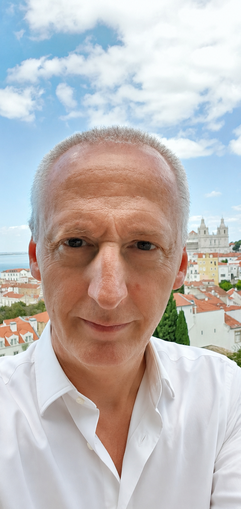
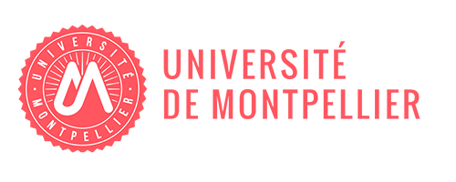
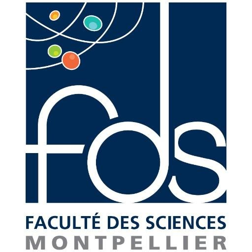
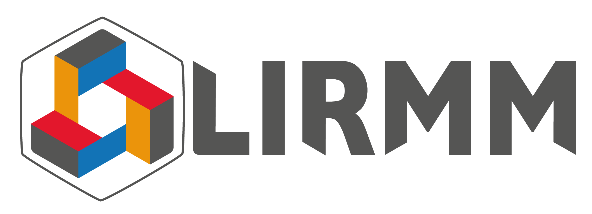
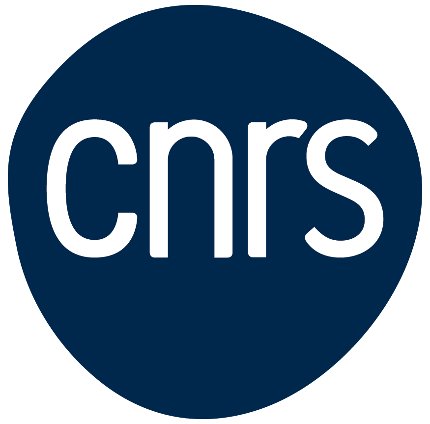

Déduction automatique
Tableaux concurrents, déduction modulo théorie, superdéduction et certification de preuves.
Professeur des Universités · Informatique
Automated reasoning, formal methods
and proof engineering.

Montpellier · LIRMM




Recherche
Mes recherches relèvent du génie logiciel et des méthodes formelles de développement. Après des travaux sur les assistants de preuve — Coq, aujourd’hui Rocq, et Focalize — je me consacre principalement à la déduction automatique en logique du premier ordre et au raisonnement modulo théories.
L’objectif est double : élaborer des méthodes de recherche de preuve efficaces et les éprouver dans des outils concrets, avec des benchmarks reproductibles.
Tableaux concurrents, déduction modulo théorie, superdéduction et certification de preuves.
Modélisation et vérification de systèmes critiques, preuve de programmes et compilation certifiée.
Assistants de preuve, relations inductives, langages de tactiques et isomorphismes de types.
Ensembles, arithmétique, géométrie et interactions entre déduction et calcul formel.
Logiciels & projets
Des prototypes de recherche ouverts, conçus pour expérimenter de nouveaux calculs et rendre les résultats reproductibles.
Démonstrateur automatique concurrent basé sur les tableaux du premier ordre. Prix « Best newcomer » à CASC-J11 en 2022.
Voir le dépôt ↗ ActifGénération d’outils de déduction basés sur les tableaux à partir de spécifications déclaratives.
Voir le dépôt ↗ Open sourceExtension de Zenon à la déduction modulo théorie et à l’arithmétique linéaire.
Voir le dépôt ↗ Open sourceSolveur SMT associant tableaux du premier ordre et théories de réécriture.
Voir le dépôt ↗ BenchmarkProblèmes de géométrie élémentaire et sélection de prémisses par apprentissage.
Voir le dépôt ↗BWare (ANR, coordinateur global, 2012–2016), ENVIEVERTE, Quotient, SSURF, A3PAT, CerPAN (responsable local Cédric), ModuLogic et EDEMOI.
Interactive lab · 01
Entrez une formule propositionnelle. Le démonstrateur cherche un contre-modèle par tableaux sémantiques, directement dans votre navigateur.
Syntaxe : ! non · & et · | ou · -> implique
Prêt à chercher une preuve.
Encadrement
Directions et codirections de thèses autour de la preuve automatique, des langages et des systèmes critiques.
Génération d’outils de déduction automatique basés sur les tableaux à partir de spécifications déclaratives de calculs logiques.
Structural Subtyping in MLTT.
Designing an Automated Concurrent Tableau-Based Theorem Prover for First-Order Logic.
Vérification formelle d’une méthodologie pour la conception et la production de systèmes numériques critiques.
ARIANE : Automated Re-Documentation to Improve Software Architecture Understanding and Evolution.
Integrating Rewriting, Tableau and Superposition into SMT.
Automated Deduction and Proof Certification for the B Method.
Publications
Aucune publication ne correspond à cette recherche.
Bibliographie consolidée à partir du dossier d’activités 2026 et vérifiée avec DBLP. Dernière publication scientifique référencée : 2022.
Exposés & conférences
Une sélection d’exposés invités, séminaires et présentations internationales.
Exposé invité, Montpellier.
Table ronde à la MSH SUD, Montpellier.
Exposés à Montpellier.
ABZ, Toulouse — Building a Proof Platform for the Automated Verification of B Proof Obligations.
PSATTT, Palaiseau.
Soutenance d’habilitation à diriger des recherches, Paris.
Zenon Modulo (GDR GPL, 2013), Tableaux Modulo Theories (Deducteam, 2012), Trusted Computer Mathematics within Focalize (MAP, 2010), transformation de Focal vers UML (UML&FM, 2008), ainsi que des séminaires au LIFL, à ICube, au Loria, à l’ENSEEIHT et à Deducteam.
Enseignement
Université de Montpellier · Faculté des Sciences, avec des interventions à l’IMT Mines Alès.
OCaml · cours créé
Fondements et raisonnement formel
Programmes et propriétés
Jusqu’à la génération de code natif MIPS
Méthodes déductives et preuve
Outils et méthodes formelles
Responsabilités
LIRMM, département Informatique.
Faculté des Sciences, Université de Montpellier.
Qualifications, promotions, RIPEC et suivi de carrière.
LIRMM, département Informatique.
Évaluations Hcéres, expertises ANR, jurys de thèse et HDR, comité éditorial du GJASE, jurys du prix de thèse du GDR GPL, comités de programme AFADL, ASE, SETS, TABLEAUX, PxTP et autres événements de la communauté des méthodes formelles.
Contact
Bâtiment 4 Ext · 2e étage
Bureau E3.12
LIRMM UMR 5506, CC477
161 rue Ada
34095 Montpellier Cedex 5, France